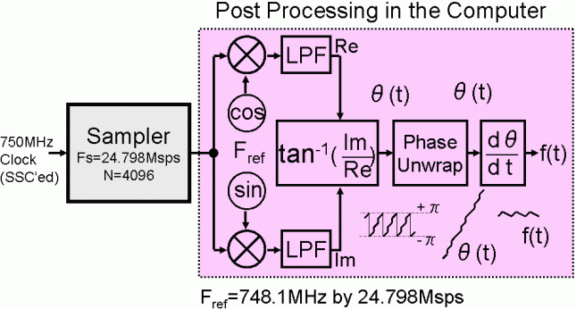
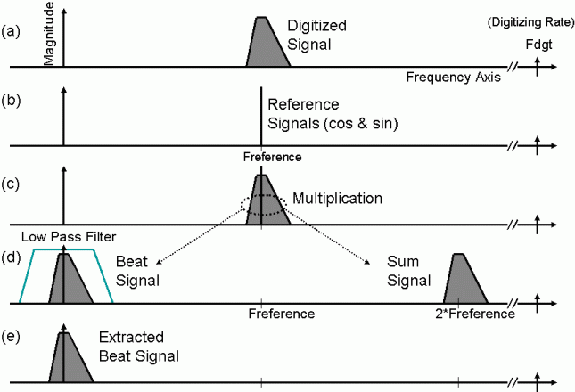
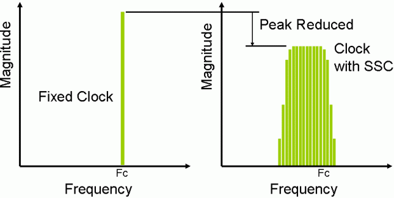
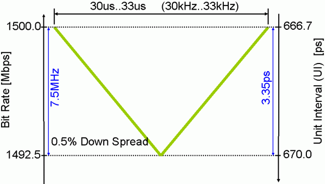
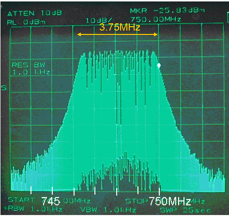
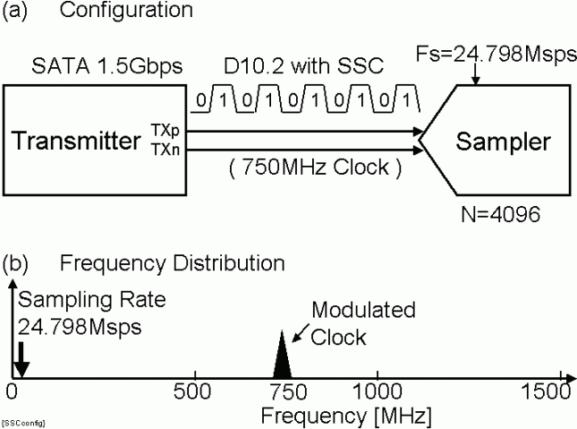
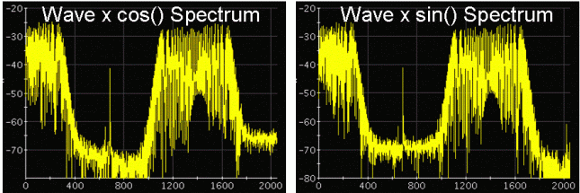
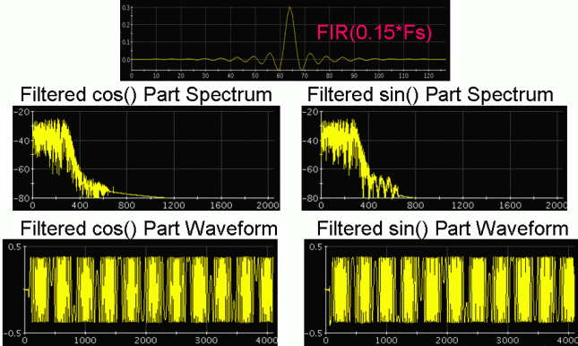
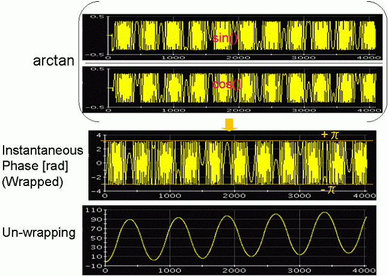
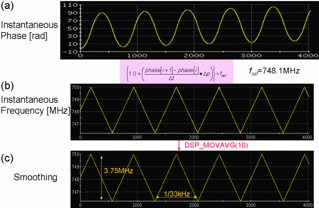

Frequency/Phase Movement Analysis by Orthogonal Demodulation - Part 4: ODM Application by Wide-band Waveform Sampler
Hideo Okawara, Verigy
Paper ID: 123519 June 2010
Preface to the Papers
In mixed signal system-on-a-chip (SOC) testing, there are lots of needs to measure phase and frequency change of signals. For instance, in a PLL circuitry, the lock-in time is one of the most typical test items. In a read/write channel device for hard disc drives, small pulse shifts for write pre-compensation are tested. Waveform digitizers or samplers that are typical mixed signal pieces of equipment can measure such changing frequency/phase with sophisticated digital signal processing. The sampled data is processed with the orthogonal demodulation method (ODM), which can extract the instantaneous phase of the test signal and analyze the frequency/phase changing trend. Swept frequencies, phase-shifted clocks, shifted pulses or edges are analyzed.
There are lots of intriguing applications available with this method so that this paper will be separated as following issues.
- Basic theory and PLL lock-in time analysis by waveform digitizer
- PLL lock-in time analysis by RT-SPU empowered digitizer
- More application examples of ODM
- ODM application by wide-band waveform sampler
In the previous issues, assorted applications are characterized with the ODM by using a real-time digitizer. In this issue, ODM is applied to the measurement result of a waveform sampler.
Wide-band Waveform Sampler Application
In order to refresh your memory, the data processing of the ODM is depicted in Figure 1, and the frequency domain of the ODM data processing is shown in Figure 2. The digitizer (or sampler) output waveform is uploaded into the computer workstation. Generating the reference cosine and sine waveforms in the computer, and multiplying them to the measured waveform. Then the data is split into the beat and sum components. The beat component is extracted by the low pass filtering. The arctangent of the cosine and sine beat components derives the instantaneous phase trend of the beat signal, which will be interpreted into the frequency/phase changing trend by differentiation.

Figure 1 ODM Processing Block Diagram

Figure 2 ODM Processing Spectrum Image
If the test signal is under-sampled by using a waveform sampler instead of a real-time digitizer, the test signals alias in the baseband. If the aliased signals are localized in a limited area and they do not mix with each other in the baseband, i.e. if the aliased signals could be arranged similar to Figure 2, the ODM can be applicable. The replica of the test signal in the baseband can clearly reconstruct frequency/phase changing trend.
ODM Analysis of SSC Applied Clock
There are many radio frequency clocks in electronic pieces of equipment. The clocks leak their RF energy outside the devices. The authorities regulate the leakage level for preventing electro-magnetic interference (EMI) problems. If a clock runs at a fixed frequency, the energy concentrates in a point frequency. Spread spectrum clocking (SSC) is a kind of frequency modulation to the system clock so that the RF energy is distributed in a certain bandwidth. Then the total power of the clock is exactly the same as the fixed clock, but the peak level would be reduced on the display of a spectrum analyzer. It is often employed in peripheral pieces of equipment such as printers and high-speed serial interface such as the serial ATA (SATA). A typical specification is shown in Figure 4 that is for 1.5 Gbps SATA. The bit rate of 1500 Mbps deviates downward by 0.5%. The modulation profile is triangle and the modulation frequency is 30 to 33 kHz.

Figure 3 Spread Spectrum Clocking (SSC)

Figure 4 SSC Specification for 1.5Gbps Serial ATA (SATA)
Figure 5 is the spectrum photograph captured by a conventional spectrum analyzer. It shows the SSC applied 750 MHz clock which is generated by the 4.1 Gsps AWG "WGF". It clearly shows the 3.75 MHz spread (0.5% of 750 MHz).

Figure 5 Spectrum of SSC Applied 750MHz Clock (0.5% Down Spread)
The demonstration measurement is done by using the 6GHz bandwidth sampler "MCC" as depicted in Figure 6. The test signal is 750 MHz clock with 33 kHz SSC emulated by the AWG. (The transmitter in Figure 6 is actually the AWG.) The SSC applied clock signal (Figure 5) is captured by MCC. The number of points N is 4096, and the actual sampling rate is 24.798 Msps.

Figure 6 Test Configuration of 1.5 Gbps SATA
The waveform and its FFT frequency spectrum are shown in Figure 7. The spectrum indicates 3.75 MHz spread. In the ODM processing, the reference frequency is settled as 748.1 MHz, which is marked in Figure 7 spectrum.

Figure 7 Measured Waveform and Spectrum
Creating the reference cosine and sine waveforms of 748.1MHz as under-sampling condition and multiplying each of them to the sampled waveform, the signals are split into the beat and the sum signals as Figure 8.
Figure 8 Reference Waveforms multiplied to Sampled Waveform

Figure 9 Filtered Beat Signals
Figure 9 shows the finite impulse response (FIR) for the low pass filtering, and the filtered beat signals are shown in the figure as well.
Applying arctangent to the sine and cosine beat signals, the instantaneous phase trend of the beat signal is reconstructed as Figure 10. Right after the arctangent operation, the phase is limited between +/-π, so the primitive phase curve should be un-wrapped to make it as the single continuous line. The phase curve shows that the test signal frequency is high or low compared to the reference signal frequency. When the phase curve increases, the test signal frequency is higher than the reference signal. When the phase curve decreases, the test signal frequency is lower than the reference signal.

Figure 10 Reconstructed Instantaneous Phase Trend
Differentiating the instantaneous phase trend shows the frequency ratio to the reference signal, and multiplying the reference frequency to the ratio, the changing frequency trend is reconstructed as Figure 11(b) and (c), which is slightly smoothed with moving average.
Figure 11 tells that the frequency deviation is 3.75MHz which is 0.5% of 750 MHz, and the modulation frequency is 33 kHz.

Figure 11 Reconstructed Frequency Trend
This is the way; the ODM can be applied in the measurement of the real-time digitizer and the waveform sampler as well.